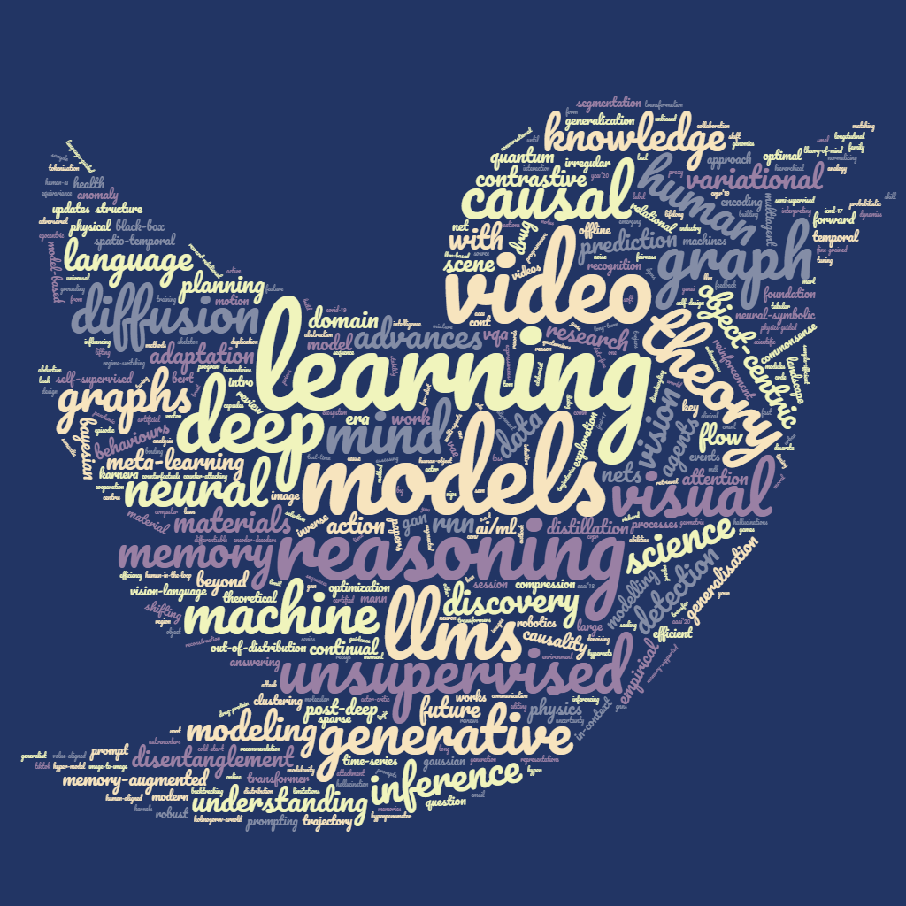

| Reading Club on Differentiable AI
Time: Thursday,
3-4.5PM | ||
| ...... | |||
|
|
Schedule 2025 27/02/2025: Tentative (Kien Do) 20/02/2025: Tentative (Tuan Hoang) 13/02/2025: Tentative (Thao Le) 06/02/2025: Tentative (Ragja Palakkadavath) 30/01/2025: Tentative (Giang Do) 23/01/2025: Tentative (Romero Morais) 16/01/2025: Tentative (Khoa Le) 09/01/2025: The 2024 Nobel Prize in Physics (Truyen Tran) 02/01/2025: -------HOLIDAY------------- 2024 26/12/2024: -------HOLIDAY------------- 19/12/2024: Crystal structure prediction with deep gen models (Duc-Anh Dao, @JAIST Japan) 12/12/2024: AI for physics - tentative (Dr Nguyen, Tuan-Hung @MIT & Tohoku Uni) 05/12/2024: 3D vision-language understanding (Quang-Hung Le) 28/11/2024: Flow matching in Diffusion Models (Khanh-Toan Nguyen) 21/11/2024: Optimal causal trajectory modelling (Phuoc Nguyen) 14/11/2024: Prompt tuning for black-box LLMs (Giang Ngo) 07/11/2024: Sequence modeling in RL (Minh-Hoang Nguyen) 31/10/2024: Assessing hallucinations and uncertainty in LLMs (Hung Le) 24/10/2024: Quaternions modules for materials science (Linh La) 17/10/2024: Diffusion models for image-to-image (Duc Kieu) 10/10/2024: Inference time alignment learning for language models (Dai Do) 03/10/2024: -------CANCELLED-------------- 26/09/2024: SAM2: Promptable segmentation of image and video (Xuan-Tuyen Tran) 19/09/2024: Online test-time adaptation (Thong Bach) 12/09/2024: Multimodal Theory of Mind (Dung Nguyen) 05/09/2024: The materials alchemist: building a material discovery ecosystem (Sherif Tawfik Abbas) 29/08/2024: Black-box data-free knowledge distillation (Tri-Nhan Vo) 22/08/2024: Lifting the limit of Multimodal LLMs (Tri Nguyen) 18/07/2024: -------POSTPONED-------------- 08/08/2024: Discrete diffusion models (Kien Do) 01/08/2024: Lifelong learning for LLMs (Tuan Hoang) 25/07/2024: Visual reasoning via LLM programmers (Thao Le) 18/07/2024: -------POSTPONED-------------- 11/07/2024: KAN: Kolmogorov-Arnold Networks (Ragja Palakkadavath) 04/07/2024: Advances in Sparse Mixture of Experts (Giang Do) 27/06/2024: Foundation models for human motion (Romeo Morais) 20/06/2024: Causal normalizing flow (Khoa Le) 13/06/2024: -------CANCELLED-------------- 06/06/2024: Hallucination in Large Vision Language Models (Quang-Hung Le) 30/05/2024: Denoising diffusion (Phuoc Nguyen) 23/05/2024: Transfer learning for graphs using Gaussian Processes (Giang Ngo) 16/05/2024: Guidance in diffusion models (Khanh-Toan Nguyen) 09/05/2024: Multimodal Agents (Quan Nguyen @Ontocord.ai) 02/05/2024: Human-aligned LLMs (Hung Le) 25/4/2024: -------ANZAC Day------------- 18/04/2024: Causality for Offline RL (Minh-Hoang Nguyen) 11/04/2024: Autonomous agents (Quy Nguyen) 04/04/2024: Stability of Physics-informed Neural Networks (Kha Pham) 28/03/2024: Prompt optimization methods for LLMs (Dai Do) 21/03/2024: Prompts for visual in-context learning (Xuan-Tuyen Tran) 14/03/2024: LLM-based multi-agents (Dung Nguyen) 07/03/2024: Physics-informed GNN for materials (Sherif Tawfik Abbas) 29/02/2024: Knowledge distillation with proxy data (Tri-Nhan Vo) 22/02/2024: LLMs for scientific discovery (Tri Nguyen) 15/02/2024: Diffusion models for image editing (Kien Do) 08/02/2024: 3D reconstruction (Tuan Hoang) 01/02/2024: Advances in vision-language learning (Thao Le) 25/01/2024: Distribution shift by label noise (Ragja Palakkadavath) 18/01/2024: Visual prompting 2 (Romero Morais) 11/01/2024: GenAI: Shifting the AI landscape, part I (Truyen Tran) 04/01/2024: -------HOLIDAY------------- 2023 28/12/2023: -------HOLIDAY------------- 21/12/2023: Advances in causal representation learning (Khoa Le) 14/12/2023: Modern ML for tabular data (Quang-Hung Le) 07/12/2023: Causality in LLMs (Phuoc Nguyen) 30/11/2023: Fast Gaussian processes (Giang Ngo) 23/11/2023: Backtracking counterfactuals (Khanh-Toan Nguyen) 16/11/2023: Emerging abilities in LLMs (Hung Le) 09/11/2023: Physics-informed machine learning 3 (Minh-Thang Nguyen) 02/11/2023: Sample efficiency in RL with causality (Minh-Hoang Nguyen) 26/10/2023: In-context learning (Kha Pham) 19/10/2023: Long form video understanding (Xuan-Tuyen Tran) 12/10/2023: Modelling other agents, cont. (Dung Nguyen) 05/10/2023: -------POSTPONED-------------- 28/09/2023: Using language to build world models (Thommen George) 21/09/2023: Sample-efficient GANs for knowledge distillation (Tri-Nhan Vo) 14/09/2023: Advances in robotics with LLMs (Laknath Semage) 07/09/2023: Adversarial attack on language and vision models (Kien Do) 31/08/2023: Temporal grounding in video (Thao Le) 24/08/2023: -------POSTPONED-------------- 17/08/2023: TikTok video duplication detection (Tuan Hoang) 10/08/2023: AI for material science (Tri Nguyen) 03/08/2023: Training and inferencing LLMs (Duy-Hung Tran) 27/07/2023: Fairness in deep learning (Ragja Palakkadavath) 20/07/2023: Active learning + model selection (Romero Morais) 13/07/2023: Root cause analysis (Phuoc Nguyen) 06/07/2023: Robust LLMs (Giang Ngo) 29/06/2023: Causal machine learning (Khanh-Toan Nguyen) 22/06/2023: Limitations of LLMs (Long Dang) 15/06/2023: -------CANCELLED-------------- 08/06/2023: Foundation Models for Science (Truyen Tran) 01/06/2023: Language-guided exploration in RL (Hung Le) 25/05/2023: Longitudinal healthcare modelling (Nikolaj Holm) 18/05/2023: AI for science (Kha Pham) 11/05/2023: Visual prompting (Xuan-Tuyen Tran) 04/05/2023: Multiagent inverse RL via ToM reasoning (Dung Nguyen) 27/04/2023: Physics-informed machine learning 2 (Minh-Thang Nguyen) 20/04/2023: Influencing human behaviours with offline RL (Thommen George) 13/04/2023: -------POSTPONED-------------- 06/04/2023: Diffusion probabilistic models: Variational perspective (Kien Do) 30/03/2023: Action transformation (Laknath Semage) 23/03/2023: ChatGPT (Duy-Hung Tran) 16/03/2023: Visual abductive reasoning (Thao Le) 09/03/2023: Generative Flow Networks 2 (Tri Nguyen) 02/03/2023: Continual learning (Tuan Hoang) 23/02/2023: Forward forward networks (Tri-Nhan Vo) 16/02/2023: Video moment retrieval (Hoang-Anh Pham) 09/02/2023: Representations for domain generalisation (Ragja Palakkadavath) 02/02/2023: Representation learning for human skeleton (Romero Morais) 26/01/2023: -------HOLIDAY------------- 19/01/2023: Diffusion models 2 (Phuoc Nguyen) 12/01/2023: Expressiveness of GNNs (Giang Ngo) 05/01/2023: -------HOLIDAY------------- 2022 29/12/2022: -------HOLIDAY------------- 22/12/2022: -------HOLIDAY------------- 15/12/2022: Feature learning via causal inference (Khanh-Toan Nguyen) 08/12/2022: Scene understanding (Long Dang) 01/12/2022: Trust region optimization in RL (Hung Le) 24/11/2022: Abstraction and generalization (Kha Pham) 17/11/2022: Vision Transformer vs CNN (Xuan-Tuyen Tran) 10/11/2022: Theory of mind (cont.) (Dung Nguyen) 03/11/2022: Reward-relational feedback (Thommen George) 27/10/2022: -------POSTPONED-------------- 20/10/2022: Out-of-distribution detection (Kien Do) 13/10/2022: Flow Network based Generative Models (Tri Nguyen) 06/10/2022: Task planning with large language models & RL (Laknath Semage) 29/09/2022: Diffusion models 1 (Duy-Hung Tran) 22/09/2022: -------HOLIDAY------------- 15/09/2022: Data encoding for quantum ML 2 (Minh-Thang Nguyen) 08/09/2022: Post-deep learning era (3) (Truyen Tran) 01/09/2022: Post-deep learning era (2) (Truyen Tran) 25/08/2022: Post-deep learning era (1) (Truyen Tran) 18/08/2022: -------CANCELLED-------------- 11/08/2022: -------CANCELLED-------------- 04/08/2022: Actor centric in video understanding (Thao Le) 28/07/2022: Causal knowledge for O.O.D generalisation (Romero Morais) 21/07/2022: Unsupervised object-centric segmentation (Hoang-Anh Pham) 14/07/2022: Theory of mind (cont.) (Dung Nguyen) 07/07/2022: (Tutorial) Bayesian neural networks (Phuoc Nguyen) 30/06/2022: (Tutorial) Variational inference & generative models (Hung Le) 23/06/2022: Analogy in AI (Kha Pham) 16/06/2022: Efficient preference based RL (Thommen George) 09/06/2022: -------CANCELLED-------------- 02/06/2022: Generalist AI (Truyen Tran) 26/05/2022: Deep causal inference (Kien Do) 19/05/2022: Tokenisation (Vuong Le) 12/05/2022: -------CANCELLED-------------- 05/05/2022: Knowledge graph - augmented language model (Tri Nguyen) 28/04/2022: Self-design of physical agents or environment (Laknath Semage) 21/04/2022: -------CANCELLED-------------- 14/04/2022: Physical reasoning of events in videos (Thao Le) 07/04/2022: -------CANCELLED-------------- 31/03/2022: Fine-grained motion understanding (Romero Morais) 24/03/2022: Few-shot action recognition (Hoang-Anh Pham) 17/03/2022: Data encoding for quantum ML (Minh-Thang Nguyen) 10/03/2022: Causal Inference for domain adaptation (Duy-Hung Tran) 03/03/2022: -------CANCELLED-------------- 24/02/2022: Theory of mind for comm and cooperation (cont.) (Dung Nguyen) 17/02/2022: Unsupervised learning of health data (Duc Nguyen) 10/02/2022: Differentiable Bayesian structure learning (Phuoc Nguyen) 03/02/2022: Hyperparameter scheduling (Hung Le) 27/01/2022: Human-in-the-loop reinforcement learning (Thommen George) 20/01/2022: Physics-informed ML (Truyen Tran) 13/01/2022: -------CANCELLED-------------- 06/01/2022: -------HOLIDAY-------------- 2021 30/12/2021: -------HOLIDAY-------------- 23/12/2021: -------HOLIDAY-------------- 16/12/2021: Unbiased scene graph generation (Long Dang) 09/12/2021: Certified robustness via randomized smoothing (Kien Do) 02/12/2021: Systematic generalization (Kha Pham) 25/11/2021: Drug discovery using knowledge graph (Tri Nguyen) 18/11/2021: Neural causal inference (Vuong Le) 11/11/2021: Domain adaptation in RL (Laknath Semage) 04/11/2021: Contrastive learning (Yi Yang) 28/10/2021: Causal computer vision (Romero Morais) 21/10/2021: Out-of-distribution generalisation in VQA (Thao Le) 14/10/2021: Intro to quantum machine learning (Hoang-Anh Pham) 07/10/2021: Regime-switching models (Duy-Hung Tran) 30/09/2021: Theory of mind (cont.) (Dung Nguyen) 23/09/2021: Modeling medical records (Duc Nguyen) 16/09/2021: Equivariance learning (Phuoc Nguyen) 09/09/2021: Meta-RL (Hung Le) 02/09/2021: Unsupervised object-centric representation (Long Dang) 26/08/2021: -------CANCELLED. Self-study materials + recording -------------- 19/08/2021: Generative memory (Kha Pham) 12/08/2021: Counter-attacking Trojans (Kien Do) 05/08/2021: -------CANCELLED-------------- 29/07/2021: Smal motions (Binh Nguyen) 22/07/2021: Multimodal learning for Video QA (Long Dang) 15/07/2021: Cold-start learning in RecSys (Tri Nguyen) 08/07/2021: Causal inference in CV (Vuong Le) 01/07/2021: Neural tangent kernels (Hoang Thanh-Tung) 24/06/2021: Sim2real and model-based RL (Laknath Semage) 17/06/2021: Commonsense reasoning in CV 2 (Romero Morais) 10/06/2021: Video dialog (Hoang-Anh Pham) 03/06/2021: Unsupervised VQA (Thao Le) 27/05/2021: Unsupervised skill discovery (Yi Yang) 20/05/2021: Egocentric action modeling (Duy-Hung Tran) 13/05/2021: Theory of mind (cont.) (Dung Nguyen) 06/05/2021: Self-supervised learning in video (Duc Nguyen) 29/04/2021: Bayesian hyper-model compression (Phuoc Nguyen) 21/04/2021: Efficient transformers (Hung Le) 15/04/2021: AI until 2040 -- AAAI 2019 report (Truyen Tran) 08/04/2021: -------CANCELLED-------------- 01/04/2021: Karneva++ (Kha Pham) 25/03/2021: Contrastive clustering (Kien Do) 18/03/2021: Unsupervised learning of graphs (Binh Nguyen) 11/03/2021: Object-centric neural networks (Long Dang) 04/03/2021: Interpreting graph models (Tri Nguyen) 25/02/2021: Unsupervised relational learning (Vuong Le) 18/02/2020: Object-centric RL (Laknath Semage) 11/02/2021: Commonsense reasoning in CV (Romero Morais) 01/02/2021: Urban robotics (Ha Q. Ngo, IfU, RWTH Aachen University) 28/01/2021: Scaling laws in neural nets (Hoang-Anh Pham) 21/01/2021: -------CANCELLED-------------- 14/01/2021: Contrastive learning in VQA (Thao Le) 07/01/2021: You and your research - Richard Hamming (Truyen Tran) 2020 31/12/2020: -------HOLIDAY-------------- 24/12/2020: -------HOLIDAY-------------- 17/12/2020: Soft actor-critic method in RL (Yi Yang) 10/12/2020: Deep learning 2.0 - Intro (Truyen Tran) 03/12/2020: Unsupervised learning in video (Duy-Hung Tran) 26/11/2020: Theory of mind for human-AI collaboration (Dung Nguyen) 19/11/2020: Models for sparse, irregular events (Duc Nguyen) 12/11/2020: Model compression (Phuoc Nguyen) 05/11/2020: Episodic memory in RL (Hung Le) 29/10/2020: Deep Learning 1.0 part B (Truyen Tran) 22/10/2020: Deep Learning 1.0 part A (Truyen Tran) 15/10/2020: Generative models (Kha Pham) 08/10/2020: Unsupervised representation learning for images (Kien Do) 01/10/2020: Representation learning on temporal graphs (Binh Nguyen) 24/09/2020: Unsupervised discovery in vision (Vuong Le) 17/09/2020: Logic loss for visual question answering (Cat Le) 10/09/2020: Drug-protein binding (Tri Nguyen) 03/09/2020: Object-centric reasoning (Long Dang) 27/08/2020: Human-object interaction (Romero Morais) 20/08/2020: Theoretical advances in DGMs (Hoang Thanh-Tung) 13/08/2020: Visual reasoning 4 (Thao Minh Le) 06/08/2020: Contrastive, self-supervised learning (Duy-Hung Tran) 30/07/2020: Theory-of-mind and graphs for MARL (Dung Nguyen) 23/07/2020: Irregular timing in time-series (Duc Nguyen) 16/07/2020: Learning to transform (Phuoc Nguyen) 09/07/2020: Robust machine learning (Daniel Ma, SIT) 02/07/2020: Physics-guided ML, physics reasoning (Laknath Semage) 25/06/2020: Program memories (Hung Le) 18/06/2020: Generative memory: Karneva machines (Kha Pham) 11/06/2020: AI in the Covid-19 pandemic (Truyen Tran) 04/06/2020: Machine learning in industry (Trong Nguyen & Ky Le) 28/05/2020: Graph conv net and dynamics (Binh Nguyen) 21/05/2020: Semi-supervised learning + NIPS work (Kien Do) 14/05/2020: Disentangling human behaviours in video (Vuong Le) 07/05/2020: Hierarchical human trajectories in videos (Romero Morais) 30/04/2020: MDL for Deep Generative Models (Hoang Thanh-Tung) 23/04/2020: Visual reasoning 3 (Thao Minh Le); BMVC talk (Romero Morais) 16/04/2020: Machine reasoning @A2I2, part 2 (Truyen Tran) 09/04/2020: Machine reasoning @A2I2, part 1 (Truyen Tran) 02/04/2020: Protein structure prediction via deep learning (Tri Nguyen) 26/03/2020: BERT for video (Long Dang) 19/03/2020: Human trajectory prediction (Hung Tran) 12/03/2020: Theory of mind (Dung Nguyen); ICPR talks (Duc Nguyen) 05/03/2020: RL and Optimal Transport Theory (Tang-Thanh Nguyen) 27/02/2020: Unsupervised learning in time-series (Duc Nguyen) 20/02/2020: Learning to explore (Phuoc Nguyen) 13/02/2020: Updates on memory (Hung Le) 06/02/2020: BERT family (Tin Pham) 30/01/2020: ICML'20 work (Hung Le) 23/01/2020: Domain adaptation (Kien Do) 16/01/2020: IJCAI'20 works (Phuoc, Dung, Thao) 09/01/2020: Meta-learning 3 cont. (Hoang Thanh-Tung) 02/01/2020: -------HOLIDAY-------------- 2019 26/12/2019: -------HOLIDAY-------------- 19/12/2019: Meta-learning 3 (Hoang Thanh-Tung) 12/12/2019: Updates on planning (Laknath Semage) 05/12/2019: Model-based RL (Thommen George) 28/11/2019: Modern AI for drug discovery (Truyen Tran) 21/11/2019: Anomaly detection: Sequences (Duc Nguyen) 14/11/2019: Anomaly detection: Vector & Deep clustering (Duc Nguyen) 31/10/2019: Inverse RL in vision (Vuong Le) 24/10/2019: Moral AI 1 (Dung Nguyen) 17/10/2019: Visual reasoning 2 (Thao Minh Le) 10/10/2019: Hypernets and variational hyper RNN (Phuoc Nguyen) 03/10/2019: Actions prediction (Romero Morais) 26/09/2019: Clinical QA (Tin Pham) 19/09/2019: Semantic memory (Hung Le) 12/09/2019: Geometric inference (Cat Le) 29/08/2019: AAAI'20 works (Cat, Dung, Thao, Phuoc) 22/08/2019: Empirical AI research 3 (Truyen Tran) 15/08/2019: Human priors in video games (Thommen George) 08/08/2019: Spatio-temporal generative models (Duc Nguyen) 01/08/2019: Disentanglement for video 2 (Kien Do) 25/07/2019: Disentanglement for video 1 (Kien Do) 18/07/2019: CVPR'19 notes (Vuong Le) 11/07/2019: Theoretical DL series 1 (Hoang Thanh-Tung) 04/07/2019: Value-aligned ML 1 (Khanh Tran) 27/06/2019: Empirical AI research 2 (Truyen Tran) 20/06/2019: Memory-supported RL (Dat Nguyen) 13/06/2019: Theory of mind 2 (Dung Nguyen) 06/06/2019: Video QA (Thao Minh Le) 30/05/2019: Empirical AI research 1 (Truyen Tran) 16/05/2019: VAE for exploration (Phuoc Nguyen); NIPS19 works. 09/05/2019: Models for human behaviours in video (Romero Morais) 02/05/2019: Neural-symbolic approach to QA 2 (Tin Pham) 26/04/2019: Neural-symbolic approach to QA 1 (Tin Pham) 17/04/2019: Conversational AI 1 (Van-Khanh Tran) 11/04/2019: Disentanglement 2 (Kien Do) 05/04/2019: ODE neural nets 2 (Hoang Thanh-Tung) 28/03/2019: Neuron, RNN & memory (Hung Le) 21/03/2019: Learning to reason 1 (Truyen Tran) 14/03/2019: Video QA (Thao Minh Le); DL in smart-homes (Duc Nguyen) 08/03/2019: ML in materials science (Duong-Nguyen Nguyen, JAIST Japan) 01/03/2019: AI for matters (Truyen Tran) 22/02/2019: Memory-augmented RL 2 (Dat Nguyen) 15/02/2019: Machine theory of mind (Dung Nguyen) 11/01/2019: Continual learning in GAN & One big net (Hoang Thanh-Tung) 04/01/2019: -------HOLIDAY-------------- 2018 28/12/2018: -------HOLIDAY-------------- 21/12/2018: AI/ML in 2019 and beyond: Planning session 2 (Truyen Tran) 14/12/2018: AI/ML in 2019 and beyond: Planning session 1 (Truyen Tran) 30/11/2018: Video QA (Thao Minh Le) 23/11/2018: Communication in Multiagent RL (Dung Nguyen) 16/11/2018: AI/ML in 2019 and beyond: Outlook (Truyen Tran) 09/11/2018: CVPR work (Romero Barata); AI/ML in 2018 (Truyen Tran) 02/11/2018: DL for source code modeling (Huong Ha) 26/10/2018: Memory-augmented RL 1 (Dat Nguyen) 19/10/2018: Visual reasoning 2: modularity (Tin Pham) 12/10/2018: Disentanglement via VAE (Kien Do) 05/10/2018: Spatio-temporal scene graphs (Vuong Le) 21/09/2018: MANN (Hung Le), GAN (Thanh-Tung) & Graphs (Kien Do) 14/09/2018: Graphs in genomics (Thin Nguyen), social media (Hung Nguyen) 07/09/2018: Advances in Neural Turing Machines (Truyen Tran) 31/08/2018: Universal transformer (Adham Beykikhoshk) 24/08/2018: Learning to count (Tin Pham) 17/08/2018: Email attachment recommendation (Binh Nguyen) 10/08/2018: Variational continual learning (Hoang Thanh-Tung) 03/08/2018: RNN, memory & attention (cont.) (Hung Le) 27/07/2018: Meta-learning 2 (Truyen Tran) 20/07/2018: Deep reinforcement learning (Phuoc Nguyen) 13/07/2018: Variational autoencoders (Budhaditya Saha) 06/07/2018: Video prediction models (Romero Morais) 29/06/2018: Graph neural nets + RL (Kien Do) 22/06/2018: Relational reasoning (Tin Pham) 15/06/2018: RNN, memory & attention (Hung Le) 08/06/2018: Deep generative models (Hoang Thanh-Tung) 01/06/2018: Deep learning for health & drug design (Truyen Tran) 18/05/2018: Scene graphs (Vuong Le) 11/05/2018: AI for science 1 (Truyen Tran) 04/05/2018: Variational encoder-decoders (Hung Le) 27/04/2018: Visual reasoning 1 (Romero Barata) 20/04/2018: Machine reasoning 1 (Kien Do) 13/04/2018: Artificial General Intelligence (AGI) 1 (Truyen Tran) 06/04/2018: GAN 2 (Hoang Thanh-Tung) 23/03/2018: Graph generative models 2 (Kien Do) 16/03/2018: Graph generative models 1 (Kien Do) 09/03/2018: The future of deep learning 4: near/medium-term (Truyen Tran) 02/03/2018: The future of deep learning 3: near/medium-term (Truyen Tran) 23/02/2018: The future of deep learning 2: near/medium-term (Truyen Tran) 09/02/2018: Graph modeling 2: Molecular models (Trang Pham) 02/02/2018: RNN (Hung Le) 19/01/2018: The future of deep learning 1: long-term (Truyen Tran) 12/01/2018: -------HOLIDAY-------------- 2017 05/12/2017: -------HOLIDAY-------------- 29/12/2017: -------HOLIDAY-------------- 22/12/2017: -------HOLIDAY-------------- 15/12/2017: -------HOLIDAY-------------- 08/12/2017: -------HOLIDAY-------------- 01/12/2017: Deep learning for biomedicine 1 (Truyen Tran) 24/11/2017: Bayesian deep learning (Hoang Thanh-Tung) 10/11/2017: Action recognition on video (Vuong Le) 03/11/2017: Capsules (Trang Pham) 27/10/2017: AAAI'18 reviews review (Truyen Tran) 20/10/2017: Text + knowledge graphs for question answering (Kien Do) 13/10/2017: Learning intuitive physics from video (Truyen Tran) 29/09/2017: Object detection (Budhaditya Saha) 22/09/2017: MANN 2 (Hung Le) 15/09/2017: GAN 1 (Hoang Thanh-Tung) 08/09/2017: IJCAI-17 key papers (Kien Do, Trang Pham & Phuoc Nguyen) 01/09/2017: ICML-17 review & key papers (Truyen Tran) 04/08/2017: Meta-learning 1 (Truyen Tran) 28/07/2017: Attention mechanisms (Trang Pham) 21/07/2017: Graph modeling 1 (Kien Do) 14/07/2017: Memory-augmented neural nets (MANN) 1 (Phuoc Nguyen) |